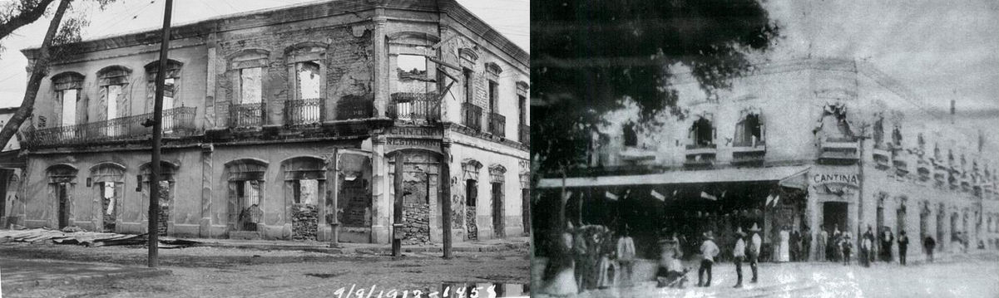

Por patrimonio arquitectónico se puede entender un edificio, un conjunto de edificios o las ruinas de un edificio o de un conjunto de edificios que, con el paso del tiempo, han adquirido un valor mayor al originalmente asignado y que va mucho más allá del encargo original. Este valor, puede ser cultural o emocional, físico o intangible, histórico o técnico.
Las obras de arquitectura que pueden considerarse de patrimonio arquitectónico serán entonces las que, debido a una multiplicidad de razones, no todas de índole técnica o artística, se consideran que, sin ellas, el entorno donde se ubican dejaría de ser lo que es.
Todo pueblo está ligado a su historia, no puede ignorar su pasado y vivir su presente, porque simplemente no sabe ni donde está parado ni hacia donde se dirige. Eso pasa en muchos lugares de nuestro país.
En la Ciudad de Torreón se han demolido un total de 24 inmuebles con un valor histórico. Conforme al listado elaborado por el Instituto Nacional de Antropología e Historia (INAH) y el instituto Nacional de Bellas Artes (INBA), en el se plasman 81 inmuebles con Valor Histórico de la ciudad de torreón registrados por el INBA y 79 por el INAH.
El edificio Arocena está ubicado en el primer cuadro de la ciudad de Torreón, sobre Avenida Hidalgo y Calle Cepeda; su arquitectura integra características art decó y art nouveaou.
Actualmente se trabaja con la propuesta de incorporar más edificaciones al catálogo, para esto se elabora una ficha que es mandará al INAH con sede en Saltillo, para que posteriormente se haga el trámite en la ciudad de México.
Existen muchos muebles con valor histórico en Torreón aun no catalogados por el INAH e INBA. Un ejemplo es el museo de la Revolución, ubicado en la calle Lerdo de Tejada. Otro inmueble no catalogado es un edificio ubicado entre las calles Leona Vicario, Morelos y Matamoros.
Museo de la Revolución Torreón, Coahuila.
Casa Mudéjar, ubicada en la calle Ildefonso Fuentes numero 65 sur, entre las avenidas Allende y Matamoros.
En Ciudad Lerdo cerca de mil 500 edificios considerados históricos sólo se conservan 310, aseguran que con la Revolución inició el deterioro de inmuebles y chalets de gran valor arquitectónico.
De 1940 a 1950, el Patrimonio Histórico de Lerdo se estimaba en mil 500 inmuebles. Según José Jesús Vargas Garza, cronista de la ciudad, en ese tiempo inicia, por parte de las autoridades y de la ciudadanía, la demolición parcial o total a gran escala de edificios con valor arquitectónico.
El cronista da varios ejemplos: el majestuoso edificio que ocupó el legendario Hospital Zarco, el cual fue demolido con grandes cantidades de dinamita. En plena Revolución, en 1913, algunos monumentos fueron derribados con balas de cañón como el prestigiado Hotel Madrid, cuya arquitectura era de dos plantas, en su lugar ahora está el Hotel San Fernando, en la esquina de la calle Hidalgo y avenida Madero.
 Hotel Madrid en Ciudad Lerdo, Durango.
En la actualidad, el padrón del Instituto Nacional de Antropología e Historia (INAH), contempla aproximadamente 310 inmuebles con valor histórico. Y es que el abandono y la falta de mantenimiento, provocaron el deterioro de decenas de edificios y chalets.
La Ciudad de Gómez Palacio se encuentra sin Patrimonio Histórico inventariado, se desconoce si existe un catálogo de edificios con valor histórico o artístico por el INAH o INBA, lo único que sabe es que los alumnos de la Universidad La Salle Laguna realizaron un inventario en el año 2004 que llevaron al Ayuntamiento y éste se encargaría de entregar el estudio a la mencionada institución.
Si no existe un catálogo del Patrimonio Histórico, entonces no se tiene ninguna herramienta para proteger y conservar inmuebles, y específicamente impedir que se derrumben más inmuebles. Gómez Palacio está lejos de tener un Centro Histórico, porque ya desde hace unos diez años perdió esa posibilidad; si bien es cierto que hace 20 tenía una marcada línea de casas de época por el centro, hoy ya no la tiene.
Actualmente la ciudad no tiene una identidad arquitectónicamente hablando, las casas de época de principios de siglo fueron desapareciendo y ahora no hay ningún espacio que defina a Gómez Palacio, carece de una identidad de patrimonio edificado, solamente se conservan elementos aislados susceptibles de ser rescatados.
 La casa Caballero localizada en la colonia el Campestre de Gómez Palacio. La casa fue construida entre 1984 y 1985.
La casa Caballero localizada en la colonia el Campestre de Gómez Palacio. La casa fue construida entre 1984 y 1985.
La pérdida de patrimonio Arquitectónico en La Laguna es responsabilidad de todos, la conservación de los monumentos es un problema social que atañe a todos los organismos del Gobierno y del resto de la sociedad. Existe una normatividad que se comparte junto con el INBA, pero más allá de ello, la responsabilidad no es únicamente de las entidades federales, también tiene que ver con las autoridades locales y al mismo tiempo con la sociedad civil.
“El mundo se mueve a un ritmo tan acelerado que la mayoría de las personas irrumpió en el siglo XXI olvidando sus orígenes. Debiera ser al revés. Deberíamos valorizar nuestras raíces y nuestra cultura, y utilizarlas como cimientos para construir nuestro futuro”.
Recomendaciones de estudiantes en el Foro Juvenil del Patrimonio Mundial, Pekín (China)
FUENTE: Investigación de El Siglo de Torreón